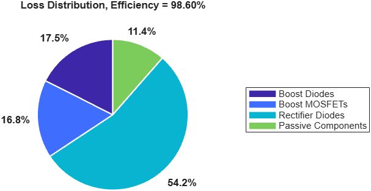

Power loss and efficiency of Simscape™ model
lossData = estimateConverterEfficiency(source,loadBlocks)lossData = estimateConverterEfficiency(source,loadBlocks,Name=Value)lossData = estimateConverterEfficiency(source,loadBlocks) returns the device loss, the passive loss, the output power and the efficiency of the Simscape log or model source, with the output power taken from the load blocks loadBlocks. When source is a model name, the function simulates the model with Simscape logging on.
lossData = estimateConverterEfficiency(source,loadBlocks,Name=Value) specifies options using one or more name-value arguments.
Run the boost PFC converter with its loss-capable devices and estimate the efficiency over the last 50 Hz line cycle of the 50 ms run. The model keeps the whole run in its Simscape log for this example.
modelName = "BoostPFCConverter";
load_system(modelName);
set_param(modelName,"SimscapeLogLimitData","off");
fidelity.BlockPath = modelName + "/Boost PFC";
fidelity.Popups = struct("modelOption","Detailed", ...
"switchDeviceOption","MOSFET (Ideal, Switching) with Thermal", ...
"diodeDeviceOption","Tabulated Diode","rectDiodeDeviceOption","Tabulated Diode");
lossData = estimateConverterEfficiency(modelName,modelName + "/Rload", ...
Fidelity=fidelity,TimeWindow=[0.6 1]);
fprintf("Efficiency: %.2f%%\n",lossData.efficiency)
The example produces this figure.

It also displays this result.
Efficiency: 98.60%
source - Simscape log or model nameSimscape log to analyze or name of the model to simulate, specified as a simscape.logging.Node object, a character vector or a string scalar.
loadBlocks - Load block pathsPaths of the load blocks that set the output power, specified as a character vector, a string array or a cell array of character vectors.
TimeWindow - Averaging windowInterval over which the loss is averaged, specified as a two-element vector of fractions of the log span or of start and end times in seconds. Default: [0.8 1]
SwitchingLossDetail - Switching loss detailLevel of detail of the switching loss, specified as "lumped" for one switching loss per device, or "separated" for the turn-on, turn-off and reverse-recovery losses. Default: "lumped"
ShowPlots - Loss plotsOption to plot the loss figures, specified as a numeric or logical 1 (true) or 0 (false). Default: true
Fidelity - Device fidelityMask settings that apply during the run and are restored after it, specified as a structure with a BlockPath field and a Popups structure of mask parameter names and values. Default: []
SimlogVariable - Simscape log variableName of the Simscape log in the simulation output, specified as a character vector or string scalar. When empty, the function uses the first Simscape log in the output. Default: ""
lossData - Loss and efficiency resultsLoss and efficiency results, returned as a structure with these fields: deviceTable, the loss of each semiconductor device in watts; groupTable, the loss of each device group; deviceTypeTable, the loss of each device class; passiveLoss, outputPower and totalLoss, in watts; efficiency, in percent; averagingWindow, the averaged interval in seconds; and percentageByGroup, the share of the loss in each group.
TimeWindow value of 1 or less is a fraction of the logged time. For an AC-input converter, set it to whole line cycles, or use powerLossFromSimscapeLog with FrequencyHz and MinCycles.SimscapeLogLimitData model parameter to "off".powerLossFromSimscapeLog | getConverterPowerLoss | Power Converter Utilities